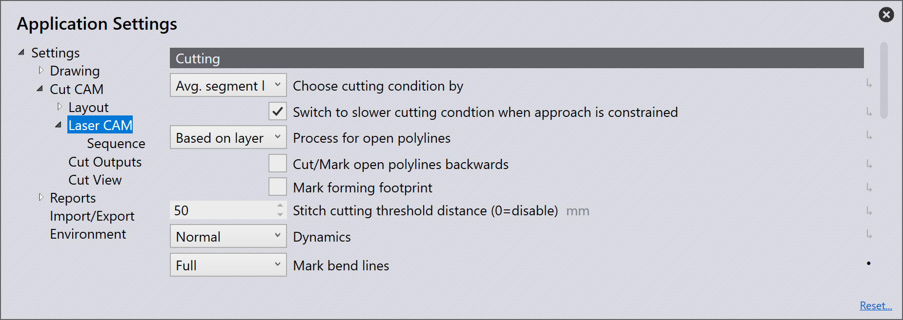
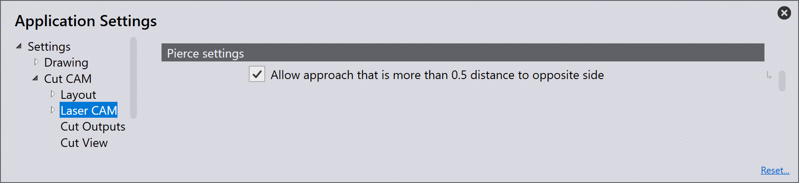
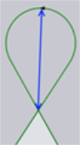
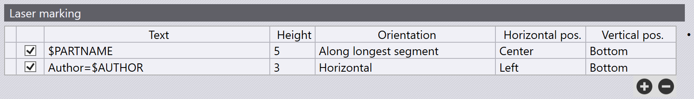

Laserové CAM
Řezání
Existují tři podmínky, na základě kterých se plech řeže.

Choose cutting condition by - Toto nastavení slouží k definování způsobu výběru řezné podmínky. Mezi možnosti patří Maximální délka segmentu, Průměrná délka segmentu a Oblast.
Maximum segment length - Nejdelší segment se použije jako prahová hodnota.
Average segment length - Průměrná délka všech segmentů se vypočítá a použije jako prahová hodnota. Výchozí nastavení v TecZone Laser.
Area - Oblast ohraničená konturou se používá jako prahová hodnota.
Switch to slower cutting condition when approach is constrained - Laserová hlava přepne na pomalé řezání, pokud je geometrie plechu pro přístup složitá.
Process for open polylines - Pokud jsou v dílu nalezeny otevřené polyčáry, v závislosti na zvolené možnosti program Řezání polyčáru odpovídajícím způsobem zpracuje. Možnosti zahrnují Cut, Mark, None a Based on layer.
None: Laser tuto čáru na výkresu dílu ignoruje.
Mark: Laser pouze označí tuto čáru, tj. nakreslí viditelnou čáru na plechu, která jej neprořízne.
Cut: TecZone Laser vybere vhodný stav laseru pro tuto polyčáru a laser ji podle toho vyřízne.
| Aby se toto nastavení projevilo, je nutné znovu vypočítat nastrojení, změny v ručním nastrojení přepíší všechny změny provedené v tomto nastavení. Pokud je otevřená polyčára ručně nastavena na „označit“ v interaktivním rozvržení, změna na „řezání“ v nastavení se neprojeví. |
Cut/Mark open polylines backwards - Možností je řezat nebo označovat otevřené polyčáry zpětně. Toto nastavení se použije pouze v případě, že je pro proces otevřených polyčar nastavena funkce řezání nebo značení.
Mark forming footprint - Když řezání detekuje situaci se zahloubením, automaticky přesune obvodovou kružnici do vrstvy tváření stopy. Pokud je tato možnost zaškrtnuta, geometrie ve vrstvě tváření stopy bude označena.
Stitch cutting threshold distance (0=disable) - Tato možnost slouží k definování maximální vzdálenosti mezi dvěma řezy, která bude zohledněna při řezání spoje.
Dynamics - Rozbalovací nabídka Dynamika obsahuje možnosti Normální, Vysoká a Snížená.
Mark bend lines - Když je tato možnost zaškrtnuta, linie ohybů vytvořené pomocí nástroje linie ohybu budou označeny/leptány na plechu pomocí laserového značení. Toto značení je užitečné pro následné operace ohýbání.
None - Pro linie ohybů není aplikováno žádné značení.
Full - Označí celou délku linie ohybu. Když je laserová technologie zpracována v TecZone, barva linie ohybu se změní na tmavě kaštanovou.
Partial - Vytváří značení na začátku a konci každého segmentu linie ohybu, přičemž každé značení má délku 10 mm.
|
Indikátor směru ohybu
Pro kladný úhel ohybu je značení zobrazeno jako plná čára. Pro záporný úhel ohybu je značení zobrazeno jako čárkovaná čára. Kontrola proveditelnosti linie ohybu
TecZone vydá varování a ponechá linii ohybu neoznačenou, pokud obsahuje neproveditelné informace o ohybu. |
Pierce settings

Allow approach that is more than 0.5 distance to opposite side - Tato možnost slouží k určení, zda je povoleno, aby najetí překročilo vzdálenost k protější straně.
Corner Processing

Rounding tolerance (distance of corner from rounding tip) - Tato možnost slouží k definování maximální povolené vzdálenosti od rohu k zaoblené špičce, jak je znázorněno na obrázku níže. Vzdálenost rohu od zaoblené špičky je přímo úměrná poloměru zaoblení. Na základě zde zadané hodnoty vybere řezání poloměr zaoblení v rozsahu min. a max. Pokud výběr nejmenšího poloměru nezajistí, aby tato vzdálenost byla v toleranční hodnotě, nebude zaoblení použito (může být použita křivka nebo chlazení).

Maximum distance of corner from outermost point on loop - Tato možnost slouží k definování maximálního rozšíření křivky od rohu. Prodloužení křivky je přímo úměrné poloměru. V ostrém rohu, pokud výběr nejmenšího poloměru nepřinese tuto vzdálenost do zde zadané hodnoty, nebude křivka použita (zaoblení nebo chlazení může být stále použito).

TwinLine

Twinline processing strategy - Toto rozbalovací menu slouží k definování použité strategie twinline.
Partwise - Řezy se provádějí po částech. Vhodné pro silné plechy, u kterých nehrozí převrácení kontur.
Partwise-Safe - Řezy se provádějí po částech, ale přípravné řezy se provádějí do sousedních částí. Vhodné pro tenké plechy, u kterých by se mohly díly převrátit.
TIO (Twinline-Islands-Outer) - Nejprve se vyříznou hrany Twinline, poté ostrovy vytvořené mezi částmi a nakonec vnější kontura.
Use TIO strategy of there are no islands - Software vždy zvolí strategii TIO (Twinline-Islands-Outer), pokud v bloku TwinLine nejsou vytvořeny žádné ostrovy. Tato možnost je ve výchozím nastavení zaškrtnutá.
Scrap cutting

Scrap grid width - Jedná se o šířku každé buňky v mřížce vytvořené nástrojem. Zde zadaná hodnota musí být taková, aby výsledný čtverec zaručeně prošel úložnými rošty bez ohledu na svou polohu.
Approach length for separating cuts - Toto je délka požadovaného nájezdu na řezání šrotu.
Vaporization

Vaporize - Toto nastavení určuje, zda se má provést odpařování nebo ne. A pokud je to nutné, které části laserové řezné dráhy musí být odpařeny.
None - Bez odpařování
Pierce - Odpaří se pouze body zápichu
Pierce & approach - Zápich a části laserem vyřezávané dráhy budou odpařeny.
Full laser path - Celá řezná dráha včetně zápichu, nájezdu a kontury bude odpařena.
Pierce point vaporization circle radius - Pokud je zde zadána hodnota větší než nula, software bude pohybovat laserovou hlavou v malém kruhu kolem bodu zápichu se zapnutým odpařovacím laserem (kruhové odpařování). Hodnota určuje poloměr tohoto kruhu. Pokud je tato hodnota nula, bude odpařovací laser zapnut přesně nad bodem zápichu a poté okamžitě vypnut (bodové odpařování).
Vaporize marking - Tato možnost slouží k zapnutí nebo vypnutí odpařování. Upozorňujeme, že laserové textové značky, které jsou vyryty pomocí makra TC_WRITE, se nikdy neodpařují.
Po změně těchto nastavení nedojde k žádné viditelné změně v uživatelském rozhraní řezání, s výjimkou toho, že ikona NC kódu bude znovu aktivována, pokud byla dříve deaktivována. Je to proto, že tato nastavení mají vliv na generování kódu. Generovaný odpařovací kód pro různé řezy je popsán v tabulce níže.
| Řezání | Chování |
|---|---|
Laser Cut |
Toto je běžná řezací položka pro řezání kontury dílu.
Pokud Vaporize = Pierce & approach, nejprve se odpaří pouze bod zápichu a nájezdová dráha a ihned poté se laserová hlava přesune nad bod zápichu a zahájí skutečné řezání. U této možnosti odpařování a u odpařování = zápich se zápich a nájezd vždy odpařují těsně před provedením řezu. Tento typ pořadí odpařování se nazývá sekční, protože každý řezaný kus je odpařen předtím, než je odříznut. Chování Vaporize = Pierce je stejné jako výše, s tím rozdílem, že se odpařují pouze body zápichu. Pokud Vaporize = None, nedojde ke změně generovaného kódu. |
Scrap Cut |
Pokud Vaporize =
Full laser path, pořadí odpařování a řezání by bylo
následující: - Kontura spolu s se zápichem a nájezdem bude odpařena. - Šrotová mřížka bude vyříznuta. - Kontura bude vyříznuta. Takže mřížka i kontura jsou nejprve odpařeny a poté vyříznuty. Pokud Vaporize = Pierce & approach nebo Pierce, segmenty zápichu a nájezdu pro šrot a konturu budou odpařeny těsně předtím, než budou řezány. |
Sheet Cut |
Řezaný plech bude vždy těsně před řezáním odpařen. |
Řezání FlyLine |
Tyto řezy se nikdy neodpařují, bez ohledu na nastavení odpařování. |
Point Cut |
To bude odpařeno těsně před řezáním. |

Laserové označování

Pravidla pro přidání jedné nebo více textových značek na díl lze definovat v Settings → Cut CAM → Laser CAM → ui:6342[Laser marking]. V tabulce níže může uživatel přidat více pravidel, přičemž každé pravidlo vede k umístění jednoho řádku textu.

| Sloupec | Popis |
|---|---|
Zaškrtávací políčko |
Pravidlo můžete povolit nebo zakázat pomocí zaškrtávacího políčka v prvním sloupci. |
Text |
Text, který musí být vložen na díl. Tento text může obsahovat následující tokeny, které budou nahrazeny odpovídající hodnotou z informací o dílu. U těchto tokenů se nerozlišují velká a malá písmena. $PARTNAME - Název dílu. $FILENAME - Název souboru FX. $ROOTFILE - Název původního CAD souboru. $PARTID - Part identifier. $CUSTOMER - Customer. $AUTHOR - Autor. $JOBNUMBER - Číslo úlohy z Díl→Info. Tyto proměnné jsou uvedeny v bublinkové nápovědě. |
Height |
Jedná se o výšku písma (od základní čáry po horní hranici.) V jednotkách mm nebo palcích. Při vkládání tohoto textu může nastat situace, že není dostatek místa pro vložení textu v předepsané výšce písma. V takových situacích TecZone Laser velikost textu automaticky zmenší v krocích po 10 %, dokud nebude možné jej umístit. Toto snížení je v současné době povoleno až do 2 mm. Minimální hodnota byla nastavena na 2 mm. |
Orientation |
Tento sloupec určuje orientaci textu. Jsou možné následující hodnoty: Horizontal - Text bude vodorovný. Vertical - Text bude svislý. Along longer side: Text bude zarovnán s delší stranou dílu. Pokud je díl na šířku, bude vodorovný a svislý, pokud je díl na výšku. Along shorter side: Text bude zarovnán s kratší stranou dílu (opačně než výše). Při přidávání dvou textů do dílu lze tuto a předchozí možnost použít společně, aby se minimalizovalo riziko překrývání textu. Along longest segment: Text bude zarovnán s nejdelším lineárním segmentem vnější kontury. V tomto případě nemusí být text vyrovnaný podle osy. Ať už je text umístěn vodorovně, svisle nebo šikmo, TecZone Laser vždy text orientuje tak, aby uživatel našel text ve správném směru, když se dívá na část z boku nejblíže k textu. To znamená, že vodorovný text umístěný dole uprostřed bude probíhat zleva doprava a při umístění nahoře uprostřed bude probíhat zprava doleva. |
Horizontal pos |
Vodorovné zarovnání textu. Možné hodnoty jsou center, left a right. Toto nastavení není relevantní, pokud Along longest segment je zvoleno jako požadovaná orientace. |
Vertical pos |
Svislé zarovnání textu. Možné hodnoty jsou center, bottom a top. Toto nastavení není relevantní, pokud Along longest segment je zvoleno jako požadovaná orientace. |
Při přidávání těchto značek se TecZone Laser vždy ujistí, aby přidaný text nekolidoval s žádnou částí kontury. U velmi malých dílů nebo dílů s malým volným prostorem automaticky zmenší velikost písma o požadovanou hodnotu, aby se text vešel dovnitř dílu a byl vzdálen od všech otvorů.